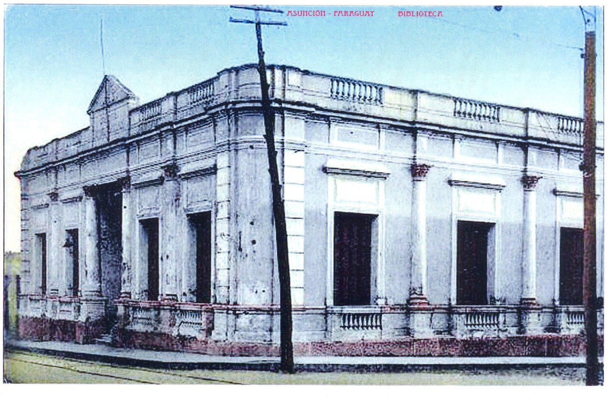

Historical aspects
Initially, during the colonial era, the Archive remained in the private house of Governor Hernandarias, then in the House of the City Council. There are few references to the National Archive from the time of Dr. Gaspar Rodríguez de Francia (1814-1840). During the Government of Don Carlos Antonio López (1842-1862) the documents remained in the Government House.
Through a Decree of President Carlos A. López, in 1855 a National Archive was created, with all the files, protocols or files and existing processes that have belonged to the old courts and the old Cabildo.
During the War against the Triple Alliance, the National Archives suffered mutilations. In 1868 Luque was designated as the second capital of the Republic, the entire Archive was moved in various carts to said city, then, after the designation of Piribebuy as the third Capital of the Republic, the Archive went there, in that place it fell into power of the enemy, being plundered. The documents were taken to Rio de Janeiro (Brazil) until 1981, the year in which they were returned to Paraguay, inventoried and cataloged under the name of the Viscount of Rio Branco Collection. Subsequently, a physical space was sought for the headquarters of the National Archives. The chosen property was part of the property of Madame Elisa Alicia Lynch, who was the sentimental partner of Marshal Francisco Solano López.
It is believed that the building, which initially had a ground floor, was built by the Swedish-born architect Carlos Rehnfeldt (there are no specific data). It is not known when the second floor of said building was built.
Decree No. 5269/1990 creates the Under Secretary of State for Culture of the Ministry of Education. The National Archives became a Department of said Undersecretary. In 2008, the National Secretariat of Culture was created, dependent on the Presidency of the Republic, and the General Directorate of Archives, Museums and Libraries became part of it.
In 2010, the recovery work on the mural painting began and the restoration and expansion projects of the building were carried out, which were carried out in 2011 in commemoration of the Bicentennial of the independence of Paraguay.
The National Archive (AN) is the national historical archive of Paraguay, and the oldest in the Río de la Plata. Its foundation, according to the historian Margarita Durán Estragó, dates from September 16, 1541. It currently depends on the General Directorate of Cultural Heritage of the National Secretariat of Culture.
The National Archive is located in the Historic Center of Asunción, on the corner of Mariscal Estigarribia and Iturbe.
The collection of the National Archives consists mainly of documentation between the years 1531 and 1870.
Between 2013 and 2016, several collections from donations or purchases were incorporated, such as the archives of Manuel Gondra, Juan Silvano Godoy, Natalicio González, Julio César Chávez, Carlos Calvo and Marco Fano; the Bibliographic Collection of Roberto Quevedo and the documents acquired from the Zorrilla Auction House of Uruguay.
Formal Description: From the point of view of applied technology: The nineteenth century in its second half, encompasses an architecture with academic and eclectic influences that can be seen in many of the buildings built at that time by professionals who came to our country from Europe and other South American countries.
The architecture of facades appears (Tripartite Organization: Zócalo, Body, coronamiento) pilasters that follow the ordering principles such as rhythm and repetition, and the harmony and balance that are observed in the openings of the building, both in the main facade and in the facade sides of it.
Typology: U-shaped architectural plan
Description: The building is located on a corner lot, between boundaries, raised above the street, and built on the municipal boundary. Its main access is on Mariscal Estigarribia street, t has a wide wooden staircase with railings and in the main access, there is a beautiful two-leaf wooden door, well designed with details that further rank the entrance, including the important portico.
The materials used for the construction are of national origin and some are imported, such as: Foundation stones, ceramic and plastered brick masonry, calcareous tile floors, wooden staircase that leads to the upper floor that has parquet floors. In the main access there are marble steps.
It is observed on the ground floor, the Catalan vault, the openings that are made up of shutters and stained glass windows.
The new building block (2010-2011) was built in the back of the building where an interior garden has been left, improving the vehicular entrance that corresponds to 2 vehicles.
Degree of Valuation (According to Municipal Ordinance JM 35/96): Architectural Value; Environmental value.
Comments: The Degree of valuation is consigned by the Historical Center Office of the Municipality of Asunción. It is part of the National Heritage by Law 5621/16 Protection of Cultural Heritage, by Resolution No. 3/2012 of the General Directorate of Cultural Heritage / SNC and protected by the Municipality of Asunción through Ordinances HJM No. 28/96 and 35/96. The National Archive is of a national nature and official management. It functionsi as an entity dependent on the National Secretariat of Culture, which is the regulatory entity for cultural policies in Paraguay. It has been in the same building since 1913, when it formed a unit with the National Library and the Museum of Fine Arts.
Observations
In 1997, through a National Law, the General Archive of the Nation was created as an institution, but that Law was never fulfilled. The expansion of the second floor was built following the requested construction canons.
Bibliography
ANA. Pussineri Scala Carlos -National Archive of Asunción-Vol.XXV-1988
Report of the Comptroller General of the Republic No. 1495/06
National Secretariat of Culture-General Directorate of Cultural Heritage-Heritage Registry Directorate-Cultural Heritage Registry Department
Municipality of Asuncion. General Directorate of Urban Development- Planning Directorate-Department of Cultural Heritage
Authors: National Archive of Asunción
Linking with other tabs
National Identity Card for Immovable Cultural Assets - Directorate for Heritage Registration General Directorate for Cultural Heritage of the National Secretariat of Culture.
Building Inventory Sheet Year 1990- Historical Center Office of the Municipality of Asunción.
Work team
Cataloger Arch. Mirtha Ibarra C.
Collaborators Arch. Clarisse Insfrán
Other Collaborators Func. Gustavo Barrios A.
Component entity Heritage Registry Directorate
Data collection date 04/30/2020
Operator Clarisse Insfrán
Registration date 05/01/2020